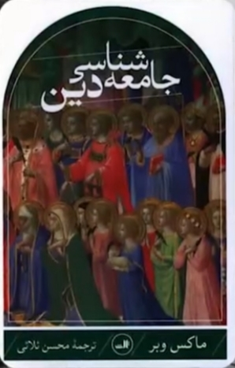
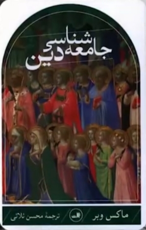
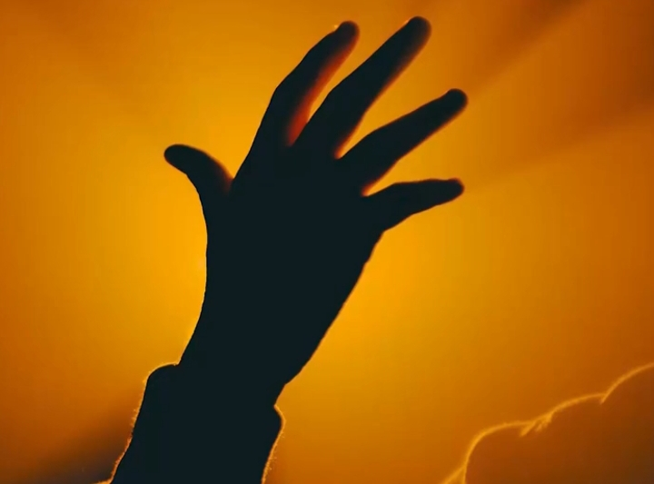
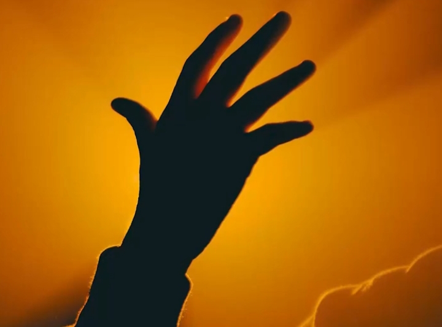
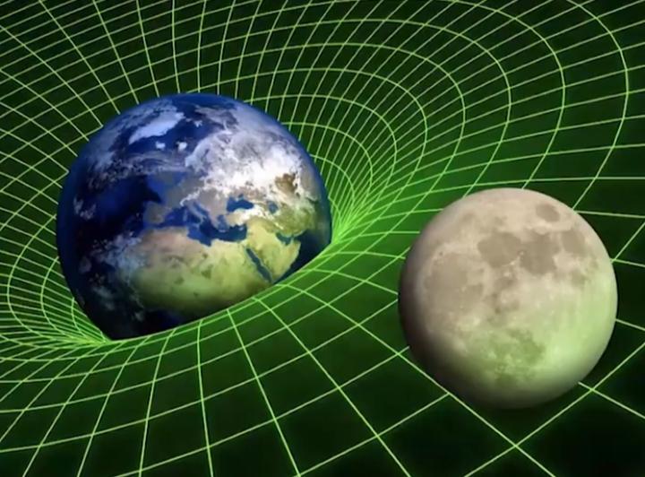
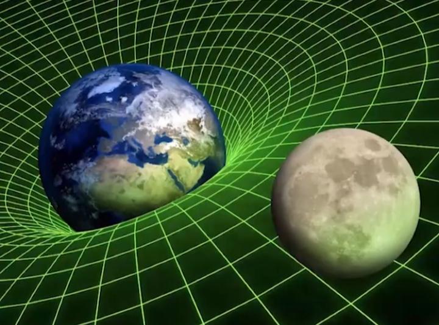

ادعای ملحد
پیامبر میگه سنگ سیاه (یعنی حجر السود) از بهشت به زمین اومده نه اینکه فرشته بوده و تبدیل به سنگ شده و مسلمانان حجر السود رو نمیپرستن بلکه اونو به عنوان یک نشانه و سنت پیامبر محترم میدونن. و بوسیدن و لمس کردن این سنگ فقط یک عمل نمادینه و اون قاب دور سنگ هم در سال ۱۶۴۰ میلادی یعنی ۱۰۰۰ سال بعد از وفات پیامبر به دستور سلطان مراد عثمانی برای حفاظت و استحکام بیشتر بر روی حجر السود نصب میشود.

مشرکین مکه قبل از اسلام الله رو به عنوان خالق یکتا قبول داشتن نه به عنوان یک بت و در کنار الله بتهایی رو به عنوان شریک و واسطه بین خود و الله میدونستن.
ماکس وِبر، جامعه شناس و تاریخ نگار برجسته آلمانی
 

در کتاب معروف خودش «جامعه شناسی دین» میگه: الله در دوران جاهلیت به عنوان خدای یکتا در بین قبایل عرب بود و بتی به عنوان الله وجود نداشته و الله اکبر بیانی از شگفتی و تسلیم در برابر خداست و میگه هیچ چیز با عظمت خدا برابری نمیکنه.
شهادت دادن صرفا به معنای دیدن با چشم نیست بلکه به معنای گواهی دادنه. دیدن یکی از راه های درک و نتیجه گیریه.
شنیدن، لمس کردن، بوییدن و چشیدن
 


حواس دیگه ما هستن که میتونن مارو به یک نتیجه گیری برسونن. همه ما میدونیم که امواج رادیواکتیو
برای بدن مضره ولی چون ما اونو با چشم نمی بینیم آیا میتونیم اونو انکارش کنیم ؟
امواج الکترو مغناسیطی ، نیرو گرانش ، امواج مادون قرمز ، نیروی جاذبه در آهن ربا
 



یعنی من با فکر و تعقل و اندیشیدن

در نظم پیچیدگیهای جهان هستی با قلبم باور دارم
مثل دانشمند معروف آنتونی فِلو، استاد دانشگاه آکسفورد
و یکی از معروفترین آتئیستهای جهان که فقط با بررسی نظم جهان هستی در سن ۸۱ سالگی به وجود خدا میرسد و کتاب «خدا وجود دارد» را مینویسد و چه زیبا خداوند در آیه ۳ سوره مُلک میگه:
در آفرینش خداوند هیچ گونه ناسازگاری نمیبینی، نگاه کن آیا خطا و خلل میبینی؟
نکات تکمیلی
- حجر السود نشانهای از سنت پیامبر است و پرستش آن صحیح نیست.
- شهادت دادن صرفاً دیدن با چشم نیست و شامل حواس دیگر و تعقل هم میشود.
- چیزهایی که دیده نمیشوند مثل امواج، نیروها و آثار نامرئی هم قابل باورند.
- اشهد ان لا اله الا الله یعنی گواهی میدهم خدا جز الله نیست، نه با چشم، بلکه با تعقل و اندیشه.
- انسان میتواند با تفکر و مشاهده نظم جهان به وجود خدا پی ببرد، حتی بدون مشاهده مستقیم.
- علوم طبیعی مثالهای فراوانی ارائه میکنند که چیزهای نامرئی، اما اثرگذار، قابل باورند (مثل امواج رادیواکتیو، نیروی جاذبه و امواج مادون قرمز).
- تعقل و اندیشه در ایمان نقش کلیدی دارد؛ شهادتین، فقط یک تجربه حسی نیست، بلکه فرآیندی فکری است.
- مطالعه تاریخ و تجربیات بزرگان مثل ماکس وبر و آنتونی فِلو نشان میدهد که عقل و تعقل میتوانند مسیر ایمان و باور را روشن کنند.